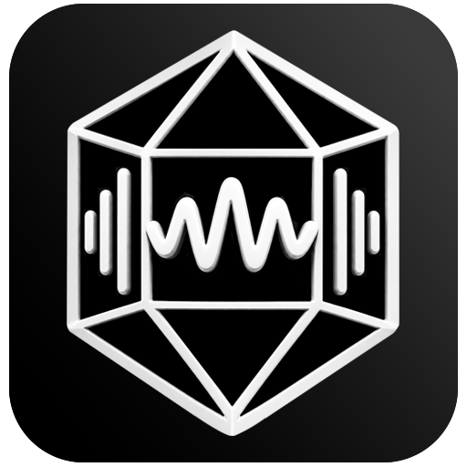

Декодер
Библиотека BASS
- Обрывы и ошибки потока
- Пустые и нечитаемые файлы
- Таймауты чтения
- Занятые другими программами файлы
- Двенадцать библиотек декодирования
Отличает по-настоящему повреждённые файлы от тех, что просто без тегов или выглядят необычно.

Как это работает
Декодер отвечает на вопрос «читается ли звук», разбор формата - на вопрос «сходится ли файл сам с собой». Второе ловит то, что первое пропускает: обрезанный FLAC декодируется до места разрыва без единой ошибки.
Библиотека BASS
Контейнер и контрольные суммы
Отдельно можно включить слежение за порчей: программа запоминает отпечаток каждого файла и на следующей проверке замечает подмену содержимого при неизменных размере и дате - так выглядит сбойный диск.
Форматы
Установка
Для Windows 10/11
Сборка не подписана сертификатом: при первом запуске Windows покажет «Неизвестный издатель» → «Подробнее» → «Выполнить в любом случае».